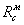
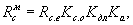
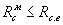
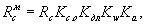
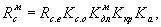
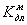

СТРОИТЕЛЬНЫЕ НОРМЫ И ПРАВИЛА
ОБЪЕКТЫ
НАРОДНОГО ХОЗЯЙСТВА В ПОДЗЕМНЫХ
ГОРНЫХ ВЫРАБОТКАХ
СНиП 2.01.55-85
ГОСУДАРСТВЕННЫЙ КОМИТЕТ СССР ПО ДЕЛАМ СТРОИТЕЛЬСТВА
Москва 1986
РАЗРАБОТАНЫ ЦНИИпромизданий Госстроя СССР М.М. Папернов - руководитель темы), Сантехпроектом Госстроя СССР (Б.Н. Кулешов - руководитель темы), Гипроавтотрансом Минавтотранса РСФСР (А.В. Пугин - руководитель темы; Е.А. Сироткин), Молдниистромпроектом Минстройматериалов Молдавской ССР (канд. техн. наук Ф.П. Спиваков - руководитель темы; канд. техн. наук И.Л. Ладыженский; Г.В. Милешин), ВГСПИ Минэлектронпрома (Д.Д. Новикова - руководитель темы; Е.С Кирштейн), ГСПИ № 10 Минавиапрома (А.Б. Страннолюбский - руководитель темы; Э.И.Дорфман) с участием ВНИИГ Минудобрений, МакНИИ, ВНИИГД и ВНИМИ Минуглепрома СССР, Метрогипротранса Минтрансстроя, института Гидропроект им. С.Я. Жука Минэнерго СССР, ЦНИИпромзернопроекта Минзага СССР и Института технической теплофизики Академии наук Украинской ССР.
ВНЕСЕНЫ ЦНИИпромзданий Госстроя СССР.
ПОДГОТОВЛЕНЫ К УТВЕРЖДЕНИЮ Главтехнормированием Госстроя СССР (В.П. Бовбель).
С введением в действие СНиП 2.01.55-85 «Объекты народного хозяйства в подземных горных выработках» утрачивает силу «Инструкция по проектированию народнохозяйственных объектов, размещаемых в отработанных горных выработках» (СН 187-75).
При пользовании нормативным документом следует учитывать утвержденные изменения строительных норм и правил и государственных стандартов, публикуемые в журнале «Бюллетень строительной техники», «Сборнике изменений к строительным нормам и правилам» Госстроя СССР и информационном указателе «Государственные стандарты СССР» Госстандарта.
Содержание
|
Государственный
комитет СССР |
Строительные нормы и правила |
СНиП 2.01.55-85 |
|
Объекты народного хозяйства в подземных горных выработках |
Взамен |
Настоящие нормы и правила распространяются на проектирование вновь строящихся и реконструируемых объектов народного хозяйства в подземных горных выработках, образовавшихся при добыче полезных ископаемых и проведении других горных работ, а также в специально пройденных для их размещения подземных горных выработках.
Требования настоящих норм не распространяются на проектирование: предприятий по добыче полезных ископаемых; подземных хранилищ газа, нефти и нефтепродуктов; транспортных, гидротехнических и коллекторных тоннелей; метрополитенов; объектов народного хозяйства, размещаемых в естественных (пещерах) и искусственных полостях, сооруженных геотехнологическим способом, а также объектов народного хозяйства с положительной температурой внутренней среды, размещаемых в вечномерзлых породах.
|
Утверждены
постановлением Государственного комитета СССР |
Срок введения |
1. ОБЩИЕ ПОЛОЖЕНИЯ
1.1. При проектировании объектов народного хозяйства в подземных горных выработках кроме требований настоящих норм следует соблюдать требования других нормативных документов, утвержденных или согласованных Госстроем СССР, государственных стандартов, законодательных актов по охране и рациональному использованию недр для целей, не связанных с добычей полезных ископаемых, а также правил и инструкций по безопасности при строительстве (реконструкции) и горнотехнической эксплуатации размещаемых в недрах объектов народного хозяйства, не связанных с добычей полезных ископаемых, утвержденных Госгортехнадзором СССР, и санитарных норм и правил, утвержденных Минздравом СССР.
Примечание. Объекты народного хозяйства далее по тексту именуются „объекты", подземные горные выработки - „выработки".
1.2. В выработках следует размещать преимущественно: объекты, требующие обеспечения устойчивости к внешним воздействиям и надежности функционирования; производства высокой точности, чувствительные к вибрационным нагрузками пылеобразованию, требующие стабильности температуры и влажности воздуха; склады продовольственных и промышленных товаров и другие склады длительного хранения; холодильники; хранилища сырья и сельскохозяйственной продукции; государственные архивы; хранилища культурных ценностей и ценной документации; стоянки автотранспорта и другие объекты.
1.3. Для размещения объектов следует использовать специально пройденные выработки, отработанные участки выработок действующих и находящихся на консервации предприятий по добыче полезных ископаемых, а также неиспользуемые выработки и подземные сооружения, пройденные для целей, не связанных с добычей полезных ископаемых.
1.4. Объекты, размещаемые в выработках, должны проектировать отраслевые технологические организации (генеральные проектировщики) с обязательным участием проектных организаций горного или шахтостроительного профиля (для разработки горно-строительных частей проекта).
1.5. При проектировании объектов в выработках следует предусматривать мероприятия по охране труда работающих, обеспечению безопасности их и населения, охране недр, окружающей природной среды, объектов, зданий и сооружений на поверхности.
Мероприятия по охране недр и окружающей природной среды, предотвращению взрывов, прорывов воды, пожаров и их тушению, ликвидации аварий и эвакуации людей из объектов должны составлять самостоятельный раздел проекта. Для объектов, размещаемых в выработках действующего предприятия по добыче полезных ископаемых, указанные мероприятия должны быть увязаны с планом ликвидации аварий этого предприятия.
1.6. Размещение группы объектов, включая объекты различной ведомственной подчиненности, следует предусматривать, как правило, в составе подземных промышленных узлов, за исключением случаев, когда такое размещение противоречит технологическим, санитарным или особым требованиям. При этом необходимо определять: взаимное расположение объектов; принципиальные компоновочные решения; транспортные схемы; возможность совместного использования объектами вскрывающих, магистральных транспортных и вентиляционных выработок, аварийных выходов, инженерных коммуникаций, сооружений и вспомогательных производств.
2. ВЫБОР ПОДЗЕМНЫХ ГОРНЫХ ВЫРАБОТОК И УЧАСТКОВ НЕДР
2.1. Выбор существующих выработок для размещения объектов следует производить с учетом:
совместимости эксплуатации предприятия по добыче полезных ископаемых с объектами, размещаемыми в выработках этого предприятия;
площадей, объемов и размеров поперечных сечений выработок;
намечаемого на ближайшие годы развития сети существующих выработок;
устойчивости выработок, определяемой их конструктивными элементами, мощностью и физико-механическими свойствами покрывающей толщи пород, геологическим строением горного массива, а также возможности использования выработок без дополнительного устройства несущей крепи или возведения ее на отдельных участках;
состояния вскрывающих (стволов, штолен), капитальных, подготовительных и очистных выработок;
возможности проведения новых вскрывающих выработок (горизонтальных, наклонных или вертикальных) при размещении объектов в выработках на отработанном участке действующего предприятия по добыче полезных ископаемых;
тепловлажностных параметров воздушной среды в выработках;
притока подземных вод;
наличия в рудничной атмосфере вредных, взрывчатых, горючих газов и пыли;
наличия территории, пригодной для строительства наземных зданий и сооружений;
использования при возможности зданий и сооружений предприятия, в выработках которого намечается разместить объекты.
2.2. Выбор участков недр для размещения объектов в специально пройденных выработках необходимо производить с учетом:
геологических и гидрогеологических условий, обеспечивающих устойчивость выработок заданных размеров без устройства несущей крепи или с ограниченным ее применением и не требующих проведения сложных работ по водоотливу и гидроизоляции выработок;
топографических условий места строительства, обеспечивающих минимальные объемы земляных и горных работ для сооружения горизонтального входа, а в случае необходимости - вертикальных или наклонных стволов.
Участки недр, благоприятные по горно-геологическим условиям для специальной проходки горных выработок под объекты (специальное строительство), должны отвечать следующим требованиям:
состоять из однородных массивов горных пород (комплексов): осадочных (карбонатных, сульфатных, галогенных, песчаников), метаморфических и изверженных (ненарушенных или слабонарушенных);
должны отсутствовать условия для прорыва воды и газов в горные выработки;
мощность массива должна быть не менее 15 м для платформенных областей при глубине залегания до 200 м и 50 м - для горноскладчатых областей при глубине залегания до 200 м по горизонтали в глубь массива на уровне подъездной дороги и при наличии пригодной для размещения наземных зданий и сооружений территории.
2.3. В необходимых случаях при выборе существующих выработок и участков недр для строительства объектов следует также учитывать:
наличие покрывающей толщи пород, обеспечивающей необходимую степень устойчивости объектов к внешним воздействиям;
влияние на размещаемые объекты сейсмических колебаний (воздействий) от взрывных работ, вибраций наземного происхождения и от работающего в выработках оборудования.
2.4. При размещении объектов в существующих выработках следует преимущественно использовать выработки гипсовых, ангидритных, известняковых, доломитовых и соляных шахт, которые характеризуются большими площадями поперечных сечений, долговременной устойчивостью, благоприятной воздушной средой и отсутствием водопритоков, а также выработки рудников и шахт по добыче полезных ископаемых камерной и камерно-столбовой системами разработки.
Примечание. При использовании соляных выработок в необходимых случаях следует предусматривать мероприятия по снижению относительной влажности воздуха или другие мероприятия по защите материалов и оборудования от влияния соляной среды.
2.5. Выработки, намечаемые к использованию для хранения твердых, сыпучих и жидких продуктов при непосредственном контакте с вмещающими породами, следует отбирать с учетом физико-механических свойств пород. Вмещающие породы должны быть:
монолитными и непроницаемыми для продуктов, намечаемых к хранению;
химически нейтральными к хранимым продуктам;
без специфических запахов, влияющих на товарные качества хранимых продуктов;
с прочностными характеристиками, не изменяемыми в процессе длительного непосредственного контакта с продуктами, намечаемыми к хранению.
2.6. Не допускается размещать объекты в выработках:
расположенных в зонах возможных затоплений паводковыми водами, или при внезапном разрушении гидротехнических сооружений;
пройденных в породах сильнообводненных, слабых и неустойчивых, закарстованных и с интенсивными оползневыми явлениями, склонных к самовозгоранию, горным ударам, выделяющих агрессивные вещества, вредные, взрывчатые и возгорающиеся газы, а также имеющих повышенную радиоактивность;
имеющих участки с большими тектоническими нарушениями в зонах сбросов, надвигов, разрывов и т.п.
3. РАЗМЕЩЕНИЕ ОБЪЕКТОВ ОБЩИЕ УКАЗАНИЯ
ОБЩИЕ УКАЗАНИЯ
3.1. При размещении объектов на отработанном участке действующего предприятия по добыче полезных ископаемых следует, как правило, обеспечивать их независимую работу.
Допускается использовать по согласованию с предприятием по добыче полезных ископаемых для нужд объекта транспортные и вентиляционные выработки, водоотливное и другое оборудование, а также здания и сооружения на поверхности предприятия.
3.2. При проектировании объектов необходимо предусматривать габариты и массу отдельных частей строительных конструкций и оборудования, допускающие возможность их транспортирования по выработкам и производство монтажа.
ПРОИЗВОДСТВЕННЫЕ ОБЪЕКТЫ
3.3. В проектах производственных предприятий в выработках необходимо предусматривать размещение цехов и служб, учитывающее возможность изменения технологии производства, а также обеспечивать максимальную поточность производства и комплексную механизацию цехового и межцехового транспорта.
3.4. Размещение производств и служб объекта на поверхности или в выработках необходимо определять проектом исходя из принятых транспортной и технологической схем, обеспечения надежности функционирования объекта, технико-экономических показателей и других факторов. При этом на поверхности следует, как правило, размещать:
административно-бытовые здания;
помещения для горноспасательных служб и охраны, а также для отдыха обслуживающего персонала;
котельные и горячие цехи;
склады запасного оборудования, горючих и легковоспламеняющихся жидкостей, химикатов, баллонов с технологическими газами, строительных материалов и изделий, металла, лесоматериалов;
окрасочные, лакировочные, пропиточные участки с применением горючих красок, лаков, горючих и легковоспламеняющихся жидкостей;
градирни;
деревообрабатывающие цехи и мастерские.
3.5. На подземных предприятиях точного приборостроения, электронной техники, радиотехники и т.п. в выработках должны, как правило, размещаться цехи диффузии и получения структур, изготовления пластин и фотошаблонов, сборочные производства, цехи волноводов, испытательные участки, а также подразделения, общие для всех производств: механосборочные производства с обработкой деталей резанием и давлением, специальных видов покрытий и печатных плат, стеклоспаев, лаборатории, помещения управляющих вычислительных комплексов, заготовительные производства, склады материалов и готовых изделий и т.п.
В выработках, прежде всего, следует размещать производства, предъявляющие повышенные требования к недопущению вибрации и запыленности производственных помещений.
3.6. В производственных помещениях с химически агрессивными выделениями поверхность стен и потолков должна иметь очертания, исключающие образование непроветриваемых пространств и скопление производственной пыли.
СКЛАДЫ
3.7. При размещении в выработках складов следует предусматривать максимальное использование благоприятных естественных климатических условий - температуры и относительной влажности воздуха.
3.8. В выработках наряду с основными помещениями следует размещать вспомогательные службы, обеспечивающие нормальную эксплуатацию склада.
3.9. В выработках ограниченной высоты, как правило, следует размещать объекты с пакетным способом механизации транспортно-складских работ.
Для формирования пакетов следует предусматривать помещения на поверхности объекта или в выработках увеличенной высоты.
3.10. В подземных винохранилищах выработки следует использовать в основном под помещения для выдержки вин.
Размещение в выработках приемно-отпускного и моечно-разливочного отделений допускается при условии соблюдения строгой зональности по отношению к выработкам, в которых производится выдержка вин, и организации обособленной вентиляции.
3.11. Полы, поверхность стен и кровли выработок или ограждающих конструкций должны обеспечивать возможность производства дезинфекции в соответствии с технологическими требованиями.
СТОЯНКИ АВТОТРАНСПОРТА
3.12. В выработках как самостоятельные объекты следует размещать стоянки автомобилей общего пользования, а также автомобилей специального назначения.
Размещать в выработках автомобили, работающие на сжиженном и сжатом газах, а также перевозящие горюче-смазочные, легковоспламеняющиеся и фекальные жидкости, ядовитые, инфицированные, токсичные, пылящие и сильнопахнущие вещества, не допускается.
3.13. В подземных стоянках допускается устройство специально оборудованных постов, расположенных в отдельных помещениях, для выполнения крепежных, регулировочных и контрольных работ, связанных с подготовкой автомобилей к выпуску на линию.
В подземных стоянках для автомобилей общего пользования допускается также размещать санитарно-бытовые и конторские помещения службы эксплуатации.
3.14. В подземных сооружениях автотранспорта следует предусматривать не менее одного главного проезда. Главным считается проезд, имеющий не менее двух выходов из объекта, один из которых служит для въезда, другой - для выезда.
4. ГЕНЕРАЛЬНЫЙ ПЛАН. ВХОДЫ (ВЫХОДЫ) И ПОДЗЕМНЫЙ ТРАНСПОРТ. ЭВАКУАЦИОННЫЕ ВЫХОДЫ
ГЕНЕРАЛЬНЫЙ ПЛАН
4.1. Генеральный план подземного объекта должен состоять из генерального плана поверхности и генерального плана подземной части объекта.
Генеральный план наземной части объекта следует проектировать в соответствии с требованиями СНиП II-89-80.
4.2. Наземные площадки при строительстве объекта следует выбирать на основе сопоставления технико-экономических показателей вариантов вскрытия подземного участка транспорта, вертикальной планировки, вентиляции, водоснабжения, канализации, теплоснабжения, электроснабжения и условий освоения площадки.
Строительство нескольких наземных площадок, как правило, не допускается.
4.3. Генеральный план объекта, размещаемого в выработках предприятия по добыче полезных ископаемых, должен учитывать комплекс зданий, сооружений, коммуникаций и линий связи этого предприятия с целью использования их для нужд объекта.
4.4. Перед порталом подземной стоянки автотранспорта следует предусматривать площадку накопления подвижного состава.
ВХОДЫ (ВЫХОДЫ) И ПОДЗЕМНЫЙ ТРАНСПОРТ
4.5. Связь подземной части объектов с поверхностью следует осуществлять по вскрывающим выработкам (стволам, штольням, тоннелям, шурфам):
транспортным, служащим для обеспечения технологического режима работы объекта и доставки оборудования (грузов);
людским, предназначенным также для транспортирования малогабаритного оборудования и изделий;
запасным, предназначенным для аварийного выхода людей из выработок;
кабельным, вентиляционным, трубным и пр.
При этом следует по возможности предусматривать вскрывающие выработки многофункционального назначения.
4.6. Для подземных объектов, как правило, следует предусматривать горизонтальные или слабонаклонные вскрывающие выработки.
Вертикальные вскрывающие выработки могут использоваться на объектах с небольшим количеством подземного персонала, с небольшим грузопотоком и с малогабаритными грузами.
4.7. На каждом объекте должно быть не менее двух отдельных выходов на поверхность, оборудованных для передвижения (перевозки) людей, один из которых может быть запасным. В качестве запасного выхода допускается использовать вентиляционные штольни, стволы и шурфы при условии оборудования их для передвижения людей, а также сбойки с неиспользуемыми выработками, имеющими самостоятельный выход на поверхность и поддерживаемыми в пригодном для передвижения людей состоянии.
Возможность одного выхода на поверхность для объектов (в том числе с периодическим пребыванием в них людей) определяется в соответствии с требованиями правил и инструкций по безопасности при строительстве (реконструкции) и горнотехнической эксплуатации размещаемых в недрах объектов народного хозяйства, не связанных с добычей полезных ископаемых.
4.8. Допускается иметь общие дополнительные выходы (входы) на группу объектов, располагаемых в одной системе выработок, при этом из любого объекта должна быть предусмотрена возможность беспрепятственного безопасного выхода на поверхность.
4.9. При технико-экономическом обосновании для доставки персонала в подземные объекты допускается предусматривать вертикальные стволы, оборудованные скоростными лифтами и двухэтажными клетями, или эскалаторные тоннели.
4.10. На объектах с большими грузопотоками, крупногабаритными грузами или требующих заезда в выработки автотранспорта при технико-экономическом обосновании следует предусматривать проведение наклонных автотранспортных или железнодорожных стволов (штолен).
4.11. Устья штолен и наклонных стволов следует устраивать в виде порталов с укреплением в необходимых случаях откосов и отводом поверхностных вод.
Порталы следует проектировать в соответствии с требованиями СНиП II-44-78.
4.12. Форма и размеры поперечного сечения вскрывающих и подземных транспортных выработок должны обеспечивать проход принятых транспортных средств, пропуск необходимых элементов оборудования и расчетного количества воздуха и людей, а также размещение инженерных коммуникаций.
В транспортных выработках, предназначенных также для движения людей, необходимо устраивать проходы, ограждаемые от проезжей части.
4.13. Уклоны автотранспортных стволов (штолен) следует принимать максимальными для принятых транспортных средств, но не более, %:
|
на прямолинейных участках длиной до 500 м ……………. |
18 |
|
на прямолинейных участках длиной свыше 500 м ……….. |
15 |
|
на криволинейных участках длиной до 500 м …………….. |
13 |
|
на криволинейных участках длиной свыше 500 м ………… |
10 |
Допускается проектировать выработки, рассчитанные на однорядное движение автотранспортных средств попеременно на въезд или выезд, в случае, если такая транспортная схема обеспечивает требуемую пропускную способность. В этом случае следует предусматривать устройство разъездов не реже чем через каждые 500 м. Размеры разъездов необходимо определять в зависимости от принятых габаритов транспортных средств.
4.14. В выработках следует предусматривать в зависимости от назначения объекта и характера перевозок аккумуляторный, конвейерный, трубопроводный, пневматический, железнодорожный и автомобильный транспорт.
При использовании в выработках автомобильного транспорта следует соблюдать требования правил и инструкций по безопасности при строительстве (реконструкции) и горнотехнической эксплуатации размещаемых в недрах объектов народного хозяйства, не связанных с добычей полезных ископаемых.
4.15. В объектах необходимо предусматривать следующие транспортные схемы:
заезд внешнего автотранспорта в выработки и использование его для внутриобъектных перевозок;
сочетание внешнего железнодорожного и автомобильного транспорта с внутриобъектным вертикальным (клетевым, скиповым и др.), аккумуляторным, конвейерным, трубопроводным и другими видами транспорта с устройством погрузочно-разгрузочных платформ на поверхности;
использование по основным транспортным выработкам внешнего железнодорожного и автомобильного транспорта в сочетании с внутриобъектным аккумуляторным, конвейерным, трубопроводным и другими видами транспорта. В этом случае погрузочно-разгрузочные платформы или рампы необходимо устраивать в горных выработках размещением полотна железной или автомобильной дороги в специальной траншее.
4.16. Зарядные станции и ремонтные мастерские аккумуляторного транспорта, предназначенного для внутриобъектных перевозок, следует размещать, как правило, на изолированных участках выработок в соответствии с требованиями, устанавливаемыми Госгортехнадзором СССР.
ЭВАКУАЦИОННЫЕ ВЫХОДЫ
4.17. Вывод всех людей, находящихся в подземных помещениях, следует обеспечивать в эвакуационные выработки через эвакуационные выходы.
Выработка считается эвакуационной, если она входит в основной или запасной маршрут выхода людей на поверхность.
Выходы считаются эвакуационными, если они обеспечивают выход из помещения в эвакуационные выработки непосредственно через тамбур, проход, коридор, лестничную клетку или через соседние помещения, не содержащие производств категорий А, Б и Е.
4.18. Устройство одного эвакуационного выхода из подземных помещений объектов допускается при условии, если устройство большего числа выходов не предусматривается требованиями других нормативных документов.
4.19. Расстояние от наиболее удаленных рабочих мест до эвакуационных выходов не должно превышать, м, для помещений с производством категорий:
|
А …………………… |
50 |
|
Б, В и Е ……………. |
75 |
|
Г …………………… |
150 |
|
Д …………………… |
200 |
4.20. Ширина дверного проема эвакуационного выхода из помещений с числом людей до 300 чел. должна быть не менее 0,8 м, свыше 300 до 450 - не менее 1,2 и свыше 450 чел. - не менее 1.8 м.
5. ОБЪЕМНО-ПЛАНИРОВОЧНЫЕ РЕШЕНИЯ
5.1. Объемно-планировочные решения объектов в выработках должны обеспечивать:
создание наиболее простой и экономичной планировки с минимальным числом типоразмеров поперечных сечений выработок;
максимальную компактность размещения помещений объекта;
минимальный объем горных работ;
применение прогрессивной технологии и комплексной механизации работ;
размещение производственных и вспомогательных помещений по схеме, обеспечивающей поточность производства, кратчайшие транспортные связи, наименьшую протяженность инженерных коммуникаций и устройство простых и надежных систем вентиляции, электроосвещения и т.п.;
размещение производственных и вспомогательных помещений в отдельных зонах (секциях), в которых компонуются помещения с одинаковыми температурными, влажностными или вентиляционными режимами, позволяющее в необходимых случаях изолировать их друг от друга;
очередность ввода объекта в эксплуатацию и возможность (в случае необходимости) его перспективного расширения;
уклоны в выработках, соответствующие технической характеристике принятых транспортных средств.
5.2. Объемно-планировочные решения объектов, размещаемых в существующих выработках, должны учитывать конфигурацию, размеры и расположение используемых выработок.
В случае необходимости следует предусматривать проведение дополнительных выработок (в том числе вскрывающих), углубление существующих выработок, устройство ниш, сбоек и другие горностроительные работы, не нарушающие устойчивого состояния выработок.
5.3. Независимая работа объекта и предприятия по добыче полезных ископаемых достигается в основном размещением объекта на участке, имеющем не используемые предприятием вскрывающие выработки, и изоляцией его от предприятия возведением по периметру объекта перемычек из несгораемых материалов (при необходимости - взрывоустойчивых) или оставлением барьерных целиков.
5.4. Объемно-планировочные решения объектов при их специальном строительстве разрабатываются исходя из технологических требований и необходимости обеспечения безопасности работ с учетом горногеологических условий используемого участка недр и оптимальных для этих условий параметров горностроительных работ (поперечных размеров, протяженности и взаиморасположения выработок).
5.5. Генеральный план подземной части объектов в специально пройденных выработках следует, как правило, решать в виде следующих схем:
первая - две (или более) горизонтальные протяженные параллельные выработки (транспортные, вентиляционные, коммуникационные или многофункциональные), между которыми располагаются выработки-камеры. Такие выработки могут иметь непосредственный выход на поверхность (штольни, тоннели, наклонные стволы) или соединяться с поверхностью через вертикальные стволы;
вторая - система горизонтальных протяженных параллельных выработок-камер, соединенных транспортными, вентиляционными или многофункциональными выработками, имеющими выход на поверхность через штольни, наклонные или вертикальные стволы.
5.6. Минимальные поперечные размеры выработок при размещении в них объектов народного хозяйства следует принимать согласно обязательному приложению 1.
5.7. Размещение в выработках оборудования, проходы и проезды между ним должны отвечать требованиям санитарных норм и правил и требованиям норм технологического проектирования.
В цехах следует предусматривать один главный продольный проезд (проход) с однорядным движением и устройством разъездов.
В случае недостаточности высоты выработок отдельное оборудование или технологические установки допускается размещать в приямках, в местных понижениях пола или предусматривать подрывку кровли с принятием дополнительных мер безопасности (установкой крепи, исключением прорыва воды и т.п.). Для размещения крупногабаритного оборудования следует использовать ниши и сбойки между целиками.
5.8. Объединение (блокировку) цехов и различных служб следует предусматривать в том случае, если это целесообразно по условиям использования выработок и соблюдены требования технологического процесса, а также санитарные и противопожарные нормы и правила.
Бытовые и конторские помещения следует проектировать по зальному принципу с устройством минимального числа перегородок, а также размещать их на этажерках и антресолях исходя из высоты выработок и санитарных норм и правил.
5.9. Производственные подразделения (цехи, участки и др.) следует располагать, как правило, в общих залах-камерах, не разделяя их на мелкие помещения. Отдельные помещения допускается выделять стенами или перегородками в соответствии с противопожарными и санитарными нормами или требованиями режима.
В отдельных помещениях должны быть размещены производства с процессами, являющимися источниками выделения производственных вредностей, требующие особого микроклимата, а также другие производства (в соответствии с технологическими требованиями).
5.10. Хранение в цехах необходимого технологического запаса легковоспламеняющихся или горючих жидкостей следует предусматривать в специально оборудованных помещениях в минимальных количествах и не более чем на сутки.
5.11. Помещения с производствами категорий А, Б и Е необходимо размещать на изолированных участках, удаленных от основных транспортных выработок и запасных выходов на расстояние не менее 100 м.
5.12. Помещения для хранения автомобилей следует предусматривать боксовые (с изоляцией одного или нескольких машино-мест) и манежные (без изоляции).
Помещения для хранения автомобилей должны иметь не более трех ярусов. Расстояние от пола до выступающих конструкций перекрытий должно быть на 0,2 м более высоты наиболее высокого автомобиля, но в любом случае не менее 2,2 м. Для двух-трехъярусных стоянок главные проезды могут размещаться на любом ярусе. Каждый ярус должен быть непосредственно связан с главным проездом междуэтажными проездами (рампами), число которых следует принимать в соответствии с нормами технологического проектирования предприятий автомобильного транспорта применительно к многоэтажным стоянкам.
6. ГОРНОСТРОИТЕЛЬНЫЕ РАБОТЫ
6.1. При проектировании объектов, размещаемых в выработках, следует предусматривать комплекс горностроительных работ, в том числе:
проведение новых выработок как при специальном строительстве объектов, так и в случае необходимости при их размещении в существующих выработках;
крепление в случае необходимости существующих выработок, их расширение, углубление и осушение, устройство ниш, оборку кровли, стен и др.;
возведение изолирующих перемычек;
устройство воздушных мостов (кроссингов);
упрочнение пород на неустойчивых участках выработок и другие работы.
6.2. Конструктивные элементы вновь проводимых протяженных выработок следует рассчитывать в соответствии с требованиями СНиП II-94-80.
Конструктивные элементы камерных выработок, а также существующих протяженных выработок следует рассчитывать в соответствии с требованиями СНиП 2.01.54-84, при этом расчетное сопротивление пород (массива) сжатию необходимо определять с учетом воздействия внутренней среды объектов, размещаемых в выработках, по методике, приведенной в обязательном приложении 2.
6.3. Конструктивные решения объектов должны быть максимально унифицированы. Их следует проектировать исходя из объемно-планировочных решений, глубины заложения, способов производства работ, инженерно-геологических условий и воздействия окружающей и внутренней (эксплуатационной) среды на конструкции с учетом климатических и сейсмических условий.
6.4. Объекты должны быть надежно защищены от проникания в них поверхностных и грунтовых вод.
При защите объекта от грунтовых вод следует осуществлять мероприятия по водоотводу и обеспечению водонепроницаемости крепи.
Дренаж может быть осуществлен устройством зазоров между крепью и породой (застенный контурный дренаж). Зазоры должны быть заполнены водопроницаемым материалом в зависимости от конструкции крепи, прочности и трещиноватости породы.
Гидроизоляцию незакрепленных выработок следует производить жидкими изоляционными материалами окрасочного типа, специальными бетонами с соответствующими добавками или торкретированием специального цементно-песчаного слоя с последующей цементацией горных пород.
6.5. При приспособлении существующих выработок для размещения объектов следует предусматривать очистку выработок от отходов полезных ископаемых, оборку кровли и стен, очистку пропилов от пыли и мелочи, увеличение при необходимости высоты выработок путем их углубления, возведение изолирующих перемычек, профилирование почвы и контура выработок, установку в необходимых случаях ограждающей, а на отдельных участках с неустойчивой кровлей - несущей крепи и другие работы.
6.6. При использовании существующих выработок необходимо предусматривать технические мероприятия по обеспечению сохранности не используемых объектом выработок в пределах выделенного горного отвода и ликвидации непригодных выработок. Следует учитывать также влияние выработок, граничащих с выделенным горным отводом, на сохранность используемого участка.
Вскрывающие выработки и скважины, не используемые объектом, должны быть изолированы или ликвидированы с учетом требований Госгортехнадзора СССР.
6.7. Для обеспечения длительной устойчивости незакрепленных выработок и предотвращения выветривания, возможных отслоений и вывалов породы в помещениях с постоянно работающим персоналом, ответственных производственных помещениях, а также на участках других выработок с недостаточной устойчивостью кровли следует, как правило, предусматривать торкретирование кровли, установку анкерной крепи и металлической сетки или различные сочетания этих видов крепи.
6.8. Существующие целики, не удовлетворяющие требованиям длительной устойчивости, должны быть упрочнены.
7. ВНУТРЕННИЕ СТРОИТЕЛЬНЫЕ КОНСТРУКЦИИ
7.1. Массу и габариты внутренних несущих конструкций (балок, ригелей, колонн, плит перекрытий) следует выбирать с учетом возможности их транспортирования и монтажа в стесненных условиях выработок.
Монолитные железобетонные конструкции допускается применять там, где это вызывается требованиями обеспечения необходимой жесткости, при динамических нагрузках на конструкции и в случае сложности решения конструкций в сборном железобетоне.
7.2.В объектах, имеющих повышенную или пониженную по отношению к окружающему массиву эксплуатационную температуру, усилия в конструкциях, жестко соединенных с крепью, следует учитывать методами расчета конструкций на температурные воздействия.
7.3. Междуэтажные перекрытия следует проектировать, как правило, из железобетонных конструкций промышленного изготовления, сборномонолитными или монолитными, а также сборно-монолитными и монолитными, возводимыми методом подъема перекрытий.
Опирание конструкций междуэтажных перекрытий в выработках следует предусматривать на железобетонную крепь. Допускается опирание стен непосредственно на породу устройством штроб, а также берм, образуемых при проходке выработок. В этих случаях нагрузки, передаваемые перекрытиями на породу или крепь, необходимо учитывать в расчете устойчивости выработок и крепи.
7.4. При возведении внутренних стен и перегородок следует использовать горные породы (известняк, ракушечник, туф и т.п.) на цементном или смешанном растворе, а также кирпич, шлакобетонные плиты или блоки, гипсовые плиты, бетон, бутовый камень, стеклоблоки. В зависимости от технологических и противопожарных требований допускается использовать также перегородки из металлической сетки, покрытой в необходимых случаях торкретом, и другие конструкции.
При необходимости следует предусматривать сборно-разборные конструкции перегородок.
7.5. Внутренние стены следует опирать непосредственно на породу, а перегородки - на выровненную поверхность бетонной подготовки. Специальные фундаменты под эти конструкции, как правило, не предусматриваются.
7.6. Инженерные коммуникации, связывающие подземный объект с поверхностью, а также внутри объектные коммуникации следует прокладывать, используя по возможности транспортные, вентиляционные и другие выработки. При этом следует предусматривать максимальное совмещение сетей различного назначения в одном коммуникационном канале.
Коммуникации, как правило, следует располагать полностью или частично по стенам выработок и производственных помещений, причем теплофикационные и водопроводные коммуникации необходимо располагать на более низких, а электрокабели и вентиляционные каналы - на более высоких отметках.
Подходные и магистральные внутриобъектные выработки могут быть разделены строительными конструкциями на три яруса:
нижний - для прокладки водопровода, теплосети, канализации в проходных и непроходных каналах;
средний - для транспорта и прохода людей;
верхний - для размещения электрокабельных и вентиляционных каналов.
7.7. При достаточной ширине выработок допускается устройство отдельно стоящих от стен выработок облицовок (внутренних стен) с использованием пространства между ними для вентиляции, подачи кондиционированного воздуха, дренирования грунтовых вод и устройства инженерных коммуникаций. Такие облицовки могут быть кирпичными или из сборных легких ограждающих конструкций.
Образуемый коммуникационный коридор может быть проходным с шириной прохода для людей 0,8 м.
7.8. Гидро-, тепло-, паро- и газоизоляционные покрытия выработок следует выбирать таким образом, чтобы совместно с отоплением и вентиляцией обеспечить требуемый температурно-влажностный режим подземных помещений.
7.9. Крепление станочного, технологического и прочего оборудования следует осуществлять анкерными болтами, закладываемыми, как правило, в почву выработок, которая на участках под фундаментные рамы оборудования должна быть выровнена бетоном.
7.10. Во всех подземных помещениях объектов необходимо устраивать полы. Исключение составляют вентиляционные, коммуникационные и эвакуационные выработки (коридоры), а также вспомогательные, служебные помещения без постоянных рабочих мест при наличии в почве выработок непылящих твердых горных пород, устройство полов в которых допускается только по особым условиям технологии производства.
7.11. Подпольные каналы для инженерных коммуникаций, а также дренажные каналы (лотки) следует, как правило, устраивать в почве выработок путем подработки их на необходимую глубину. Необходимость облицовки каналов определяется проектом.
7.12. Короба вентиляции следует располагать под потолком помещений на подвесках или поперечных опорах. При недостаточной высоте выработок короба допускается размещать сбоку, в параллельных коммуникационных выработках, куда выносятся и другие коммуникации.
7.13. Подъемно-транспортное оборудование, подвесные потолки, инженерные коммуникации и подвесное технологическое оборудование следует крепить анкерами непосредственно к кровле в случае ее достаточной прочности.
7.14. Внутренние отделочные работы следует предусматривать с использованием естественного материала вмещающих горных пород.
При размещении объекта в достаточно прочных породах (известняках, доломитах, гипсах, песчаниках, туфах, ракушечниках, каменных солях, гранитах и т.п.) на большей части стен и целиков следует использовать их естественную поверхность с соответствующим ее выравниванием и обработкой.
В случае необходимости по санитарным и технологическим условиям (в том числе для паро-, гидро- и газоизоляции) внутреннюю отделку поверхностей выработок следует производить набрызг-бетоном, силикатными, цементными красками, эмалями, жидкими изоляционными покрытиями окрасочного типа, известковой побелкой.
7.15. В помещениях, к которым предъявляются повышенные требования по чистоте, параметрам воздушной среды и освещенности, допускаются облицовка стен и потолков выработок различными отделочными материалами и применение подвесных потолков.
8. САНИТАРНО-ТЕХНИЧЕСКИЕ УСТРОЙСТВА
ОТОПЛЕНИЕ, ВЕНТИЛЯЦИЯ И КОНДИЦИОНИРОВАНИЕ ВОЗДУХА
8.1. В выработках, естественные температура и относительная влажность воздуха которых не соответствуют нормам, следует предусматривать соответствующую обработку воздуха системами отопления, вентиляции и кондиционирования.
8.2. При проектировании систем отопления, вентиляции и кондиционирования температуру, относительную влажность и скорость движения воздуха следует принимать:
при наличии специальных технологических требований или условий хранения продукции - по нормам технологического проектирования, а для отдельных складских и автотранспортных объектов - по рекомендуемому приложению 3;
при отсутствии специальных требований - согласно ГОСТ 12.1.005-76.
В помещениях большого объема указанные параметры воздуха допускается обеспечивать только в пределах рабочей зоны.
Предельно допустимые концентрации вредных веществ (газов, паров, пыли) в воздухе подземных помещений следует принимать согласно ГОСТ 12.1.005-76 и перечням предельно допустимых концентраций (ПДК), утвержденным Минздравом СССР.
Системы и средства отопления, вентиляции и кондиционирования воздуха необходимо выбирать в соответствии с характером и назначением помещений и рассчитывать с учетом тепло- и массообмена среды помещений с окружающими горными породами.
8.3. Отопление производственных и складских помещений следует предусматривать, как правило, воздушное, совмещенное с системой вентиляции.
Отопление вспомогательных помещений следует предусматривать местными нагревательными приборами.
При расчете отопления в подземных сооружениях автомобильного транспорта дополнительное тепло на обогрев автомобилей, а также устройство воздушно-тепловых завес на въездах (выездах) допускается не предусматривать.
Отопление не следует предусматривать в помещениях, где естественные параметры внутреннего воздуха соответствуют установленным требованиям, а также в автотранспортных и вентиляционных выработках.
8.4. В объектах (помещениях), где тепловыделения больше теплопотерь, удаление теплоизбытков следует предусматривать путем ассимиляции их вентиляционным воздухом или (при недостаточной теплоассимилирующей способности воздуха) средствами охлаждения (кондиционирования).
8.5. В подземных объектах необходимо предусматривать принудительную непрерывно действующую вентиляцию.
Главные (общеобъектные) вентиляторные установки должны состоять из двух вентиляционных агрегатов - рабочего и резервного. При соответствующем обосновании допускается установка одного вентиляционного агрегата с двумя электродвигателями - рабочим и резервным.
8.6. При проектировании систем вентиляции и кондиционирования воздуха следует предусматривать использование теплоаккумулирующих выработок и последовательное перемещение воздуха из одного помещения в другое при отсутствии источников выделения вредных веществ в воздух рабочей зоны.
В помещениях большого объема с малой кратностью воздухообмена допускается при соответствующем обосновании использование устройств для перемешивания воздуха.
Воздухообмен в помещениях следует осуществлять из условия предотвращения образования непроветриваемых пространств (зон).
8.7. Подача воздуха, распределение его по выработкам (помещениям) и удаление из объекта могут производиться по всему свободному сечению выработок (без воздуховодов). Исключение составляют транспортные выработки, в которых используется транспорт, загрязняющий воздушную среду. Использование этих выработок для подачи приточного воздуха без воздуховодов не допускается.
Для пропуска воздуха из одного помещения в другое допускается устройство перепускных отверстий в разделяющих их стенах или перегородках.
В выработках, используемых для передвижения людей, скорость воздушного потока не должна превышать 8 м/с.
8.8. Воздух, удаляемый местными отсосами от оборудования, выделяющего вредные газы, пары или пыль, перед выбросом в атмосферу или в общеобъектную исходящую струю следует подвергать очистке в установках, расположенных в выработках. В случае, если эти установки занимают значительные объемы, допускается предусматривать централизованные очистные установки, вынесенные на поверхность.
8.9. Транспортирование воздуха к очистным установкам, расположенным на поверхности, следует производить по воздуховодам или по обособленным вентиляционным выработкам, находящимся под разрежением.
Транспортирование газо- или пылевоздушных смесей следует производить по воздуховодам, проложенным в вентиляционных выработках.
ВОДОСНАБЖЕНИЕ
8.10. Для хозяйственно-питьевого водоснабжения следует использовать подземные источники. При недостаточном дебите подземных источников допускается применять раздельные системы водоснабжения от поверхностных источников и водозаборных скважин, в том числе пробуренных в выработках.
8.11. При наличии в выработках постоянного притока воды в проекте водоснабжения объекта необходимо рассматривать возможность использования ее на производственные нужды и в качестве водоохладителя оборотных систем водоснабжения.
8.12. Емкости для хранения противопожарных, технологических и аварийных запасов воды, забираемых из подземных источников, следует располагать непосредственно в выработках. Расчет указанных запасов следует производить в соответствии с требованиями СНиП 2.04.02-84.
При заборе воды из открытых водоемов или поверхностных водозаборных скважин емкости запаса воды следует располагать, как правило, на поверхности.
8.13. Для охлаждения производственного (технологического) оборудования и аппаратов следует преимущественно применять оборотные системы водоснабжения с воздушным или водяным охлаждением и использованием отводимого тепла.
В качестве охладителей следует использовать градирни, брызгальные бассейны, теплообменные аппараты. Расчет сооружений и оборудования для охлаждения воды следует производить в соответствии с требованиями СНиП 2.04.02-84.
КАНАЛИЗАЦИЯ И ВОДООТЛИВ
8.14. Объекты должны быть оборудованы системами, обеспечивающими сбор и отвод на поверхность производственных, хозяйственно-бытовых и шахтных сточных вод.
В подземных объектах следует предусматривать, как правило, совмещение сетей и установок шахтного водоотлива и производственных сточных вод. Совмещение сетей при наличии химически загрязненных производственных сточных вод не допускается.
8.15. Вывод стоков из отдельных помещений следует предусматривать с устройством гидрозатворов на выпусках. Попадание в условно-чистую канализацию вредных производственных загрязнений не допускается.
8.16. Самотечные трубопроводы канализации необходимо, как правило, прокладывать в каналах.
Незагрязненные производственные и шахтные воды допускается отводить по лоткам. Со стороны прохода людей лотки должны быть перекрыты.
8.17. Сброс в канализацию горючих жидкостей не допускается. В помещениях, в которых имеются указанные жидкости, необходимо предусматривать устройство ловушек на случай аварийных выпусков.
8.18. Очистку производственных стоков с вредными загрязнениями следует производить, как правило, на поверхности.
Кислые стоки от отдельных производств, как правило, должны быть нейтрализованы до степени, обеспечивающей возможность их отвода по трубопроводам и бетонным лоткам.
Устройство локальных очистных сооружений непосредственно в выработках допускается при соответствующем обосновании.
8.19. Устройство систем внутренней канализации допускается не предусматривать в тех случаях, если на подземном объекте отсутствует водопроводная сеть и число работающих не превышает 25 чел. в смену.
8.20. Сточные воды должны выводиться непосредственно на поверхность или предварительно поступать в общеобъектные приемные резервуары (водосборники), расположенные в околоствольных дворах или наиболее пониженных участках выработок.
При необходимости следует предусматривать устройство для отдельных пониженных участков объекта местных канализационных и шахтных насосных установок, перекачивающих стоки и шахтные воды в резервуары (водосборники) общеобъектных насосных установок.
8.21. Общеобъектные и местные насосные установки должны иметь приемные резервуары (водосборники), вместимость которых следует определять по табл. 1.
Таблица 1
|
Установки |
Вместимость резервуара |
|
Водоотливные установки шахтных вод: |
|
|
общеобъектные |
Не менее 4-часового нормального притока воды |
|
участковые |
Не менее 2-часового нормального притока воды |
|
Насосные установки производственных и бытовых сточных вод: |
|
|
общеобъектные |
Не менее 2-часового среднего притока воды |
|
местные |
Не менее одночасового среднего притока воды |
При совмещении установок шахтного водоотлива и производственных сточных вод вместимость водосборника следует принимать суммарной.
8.22. Общеобъектные насосные установки шахтного водоотлива, а также совмещенные (шахтного водоотлива и производственных сточных вод) со среднечасовым притоком воды свыше 50 м3 должны иметь не менее трех насосных агрегатов (рабочий и два резервных). Производительность рабочих насосов должна обеспечивать откачку нормального суточного притока не более чем за 20 ч.
Общеобъектные насосные установки производственных и бытовых сточных вод должны иметь не менее двух насосных агрегатов (рабочий и резервный). Производительность рабочих насосов должна обеспечивать откачку среднесуточного притока за 22 ч.
8.23. В общеобъектных насосных установках шахтного водоотлива, а также совмещенных (шахтного водоотлива и производственных сточных вод) следует предусматривать не менее двух напорных трубопроводов, каждый из которых должен быть рассчитан на полную производительность насосной установки.
Насосы должны обеспечивать подачу шахтных и производственных сточных вод в любой из напорных трубопроводов.
ТЕПЛОСНАБЖЕНИЕ, ХОЛОДОСНАБЖЕНИЕ И ГАЗОСНАБЖЕНИЕ
8.24. Теплоснабжение объектов, как правило, необходимо предусматривать от наземных источников.
В качестве источников теплоснабжения следует принимать:
для водяных систем отопления и подогрева - распределительные тепловые сети ТЭЦ или районные котельные или собственную котельную;
для электрических систем отопления и подогрева - распределительные сети подстанции объекта.
При технико-экономическом обосновании допускается размещать источники теплоснабжении непосредственно в выработках.
8.25. При наличии в объекте отдельных узлов, в которых перерыв технологического процесса недопустим, следует предусматривать подземные резервные источники теплоснабжения, мощность которых определяется минимальными потребностями неотключаемых потребителей.
8.26. Выбор холодильного оборудования для обеспечения заданных температурно-влажностных параметров воздушной среды в подземных объектах (холодильниках, охлаждаемых складах и др.) следует производить на основании геотеплофизических расчетов с учетом теплопередачи через ограждения помещений и в глубь породного массива.
Исходные данные для геотеплофизических расчетов следует принимать по данным инженерных изысканий и метеонаблюдений.
8.27. Дренажи, сбросы, промывочные воды от систем теплоносителя следует собирать в специальные сборные емкости с последующей перекачкой в общую канализационную сеть объекта.
8.28. Снабжение технологическими газами (сжатым воздухом, азотом, кислородом, водородом и т.д.) подземных производств необходимо, как правило, предусматривать централизованно от энергоисточников, расположенных на поверхности.
8.29. Ввод трубопроводов с горючими газами к потребителю в подземный объект следует осуществлять через отдельную скважину (штольню, шурф) непосредственно в помещение, в котором потребляются эти газы. Помещение должно быть закреплено негорючей крепью и оснащено автоматическими газоанализаторами и средствами автоматического пожаротушения.
9. ЭЛЕКТРОТЕХНИЧЕСКИЕ УСТРОЙСТВА
ОБЩИЕ УКАЗАНИЯ
9.1. Электротехнические устройства объектов, размещаемых в выработках, следует проектировать с учетом требований Правил устройства электроустановок (ПУЭ), правил и инструкций по безопасности при строительстве (реконструкции) и горнотехнической эксплуатации размещаемых в недрах объектов народного хозяйства, не связанных с добычей полезных ископаемых (СН 174-75, СН 357-77), и требований настоящих норм.
9.2. Исполнение электрооборудования, осветительных сетей, светильников должно соответствовать условиям среды в подземных помещениях, технологическим требованиям размещаемого производства, обеспечивать взрывопожарную и электробезопасность при работе и обслуживании.
ЭЛЕКТРОСНАБЖЕНИЕ
9.3. Электроснабжение объектов, размещаемых в выработках, должно производиться от внешних источников питания согласно техническим условиям местной энергоснабжающей организации и заданию на проектирование.
9.4. Основные электроприемники подземных объектов по надежности электроснабжения следует относить, как правило, ко II категории по ПУЭ, остальные - к III категории. Электроприемники отдельных небольших объектов складского характера и вспомогательного назначения должны быть отнесены к III категории.
Основные электроприемники отдельных крупных объектов с вертикальными входами, большой численностью подземного персонала или сложным технологическим процессом следует относить к I категории по ПУЭ.
Электроприемники жизнеобеспечения подземного персонала (аварийное освещение, установки связи и сигнализации, противопожарные установки и другие неотключаемые потребители) должны быть отнесены к особой группе электроприемников I категории с возможностью получения электропитания от автономного источника.
9.5. При электроснабжении объекта от наземных энергосистем и наличии в нем не отключаемых потребителей следует проектировать автономную (резервную) подземную электростанцию, мощность которой определяется величиной нагрузки не отключаемых потребителей. В качестве автономного источника электропитания могут быть использованы также аккумуляторные батареи.
9.6. Ввод электропитания в подземный объект с электроприемниками I и II категорий независимо от величины напряжения питания следует предусматривать по разнесенным кабельным линиям, проложенным по разным вскрывающим выработкам или специально пробуренным скважинам.
ЭЛЕКТРООБОРУДОВАНИЕ И КАБЕЛЬНАЯ СЕТЬ
9.7. Понизительные подстанции (ПП), центральные подстанции (ЦП), распределительные пункты (РП) следует располагать, как правило, в выработках. При расположении ПП, ЦП или РП крупных объектов в выработках следует применять глубокие вводы на напряжение 6-10 кВ.
РП, ЦП, ПП и автономные источники электропитания необходимо, как правило, размещать в отдельных помещениях.
9.8. На подземных понизительных подстанциях следует предусматривать установку сухих трансформаторов или трансформаторов с заполнением негорючей жидкостью и безмасленных выключателей.
При установке двух трансформаторов мощность каждого из них должна обеспечивать покрытие 65-70 % расчетной нагрузки объекта.
9.9. Распределительные устройства РП, ЦП и ПП следует предусматривать с одинарной секционированной системой шин.
Шины щитов напряжением 380/220 В могут иметь секционирование с автоматическим включением резерва (АВР) при наличии электроприемников I категории и без АВР при наличии электроприемников II и III категорий. Устройство АВР может осуществляться непосредственно у отдельных электроприемников I категории.
Электроприемники особой группы следует выделять в отдельные секции, питание которых при отключении основного источника должно автоматически переключаться на автономный источник.
9.10. Заземление подземных электроустановок необходимо выполнять в соответствии с требованиями ПУЭ и Инструкции по устройству, осмотру и измерению сопротивлений шахтных заземлений.
9.11. В подземных объектах следует применять кабели с оболочками или защитными покрытиями, не распространяющими горение.
Для цепей питания электроприемников I категории следует применять кабели и провода с медными, а для остальных потребителей - с алюминиевыми жилами (в местах, где исключается появление взрывоопасной смеси).
9.12. Кабели, как правило, следует прокладывать открыто по стенам выработок, за исключением пожароопасных помещений. При числе кабелей свыше 30 их прокладку следует осуществлять в кабельных коллекторах.
Кабели связи и сигнализации необходимо прокладывать на стороне выработки, свободной от силовых кабелей, а при невозможности выполнения этого требования - на расстоянии не менее 0,2 м от силовых кабелей.
При пересечении силовых кабелей с кабелями связи и сигнализации силовые кабели следует прокладывать в трубах или отделять перегородкой из несгораемых или трудносгораемых материалов.
ЭЛЕКТРООСВЕЩЕНИЕ
9.13. При проектировании электроосвещения подземных объектов должны быть обеспечены: нормы освещенности и показатели качества освещения с учетом требований по устройству искусственного ультрафиолетового облучения; бесперебойность освещения; удобство и безопасность обслуживания и управления осветительными установками.
9.14. Во всех подземных рабочих помещениях следует предусматривать рабочее и аварийное, а на путях эвакуации - эвакуационное освещение с установкой на входах световых указателей.
В нормальном режиме допускается питание светильников аварийного и эвакуационного освещения от сети рабочего освещения. При нарушении питания рабочего освещения светильники аварийного и эвакуационного освещения должны автоматически переключаться на питание от автономного источника электроэнергии.
9.15. Для освещения подземных помещений следует использовать преимущественно люминесцентные лампы. Применение других ламп должно быть обосновано.
9.16. Для питания светильников необходимо предусматривать напряжение не более 220 В переменного и постоянного тока. Постоянный ток допускается применять только для питания светильников аварийного и эвакуационного освещения с лампами накаливания при отсутствии автономного источника питания переменного тока. Для питания светильников местного освещения следует применять напряжение 36 В, для ремонтного освещения - 12 В.
Таблица 2
|
Помещения |
Освещенность, лк |
Поверхность, к которой относятся нормы освещенности |
||
|
люминесцентными лампами |
лампами накаливания |
|||
|
Диспетчерские пункты, узлы связи и сигнализации: |
|
|
|
|
|
на пультах |
200 |
100 |
Вертикальная |
|
|
" столах |
200 |
100 |
Горизонтальная на уровне стола |
|
|
Помещения автономных источников питания: |
|
|
|
|
|
на щитах |
150 |
75 |
Вертикальная |
|
|
" полу |
100 |
50 |
На уровне 0,8 м от пола |
|
|
Трансформаторные подстанции, распределительные пункты, щитовые, камеры вентиляционные |
150 |
75 |
То же |
|
|
Насосные |
100 |
50 |
" |
|
|
Автотранспортные выработки |
10 |
5 |
Горизонтальная на почве |
|
9.17. Освещенность основных производственных, вспомогательных и складских подземных помещений следует принимать в соответствии с требованиями СНиП II-4-79.
Освещенность специальных подземных помещений (при системе общего освещения) следует принимать согласно табл. 2.
9.18. При отсутствии автономных источников питания допускается применять переносные индивидуальные источники освещения вместо устройства аварийного и эвакуационного освещения.
9.19. Освещение главных выработок, служащих для транспортирования грузов, подачи и распределения воздуха, должно выполняться, как правило, потолочными и настенными жестко закрепленными светильниками.
10. ТРЕБОВАНИЯ ПОЖАРНОЙ БЕЗОПАСНОСТИ
ОБЩИЕ УКАЗАНИЯ
10.1. Категории производств подземных объектов по взрывной, взрывопожарной и пожарной опасности следует принимать в соответствии с требованиями СНиП II-90-81.
В выработках целесообразно размещать производства (склады) категорий В, Г и Д. Возможность размещения производств (складов) категорий А, Б и Е решается министерствами или ведомствами для каждого конкретного случая с обеспечением необходимой взрывной, взрывопожарной и пожарной безопасности.
10.2. При размещении производств различных категорий в одной выработке следует соблюдать требования СНиП II-90-81.
10.3. В проектах подземных объектов следует предусматривать устройства для локализации пожара в ограниченном объеме выработок и подземных помещений с применением средств пожаротушения (воды, пены, газа или порошка), определяемых требованиями безопасности, технологическими требованиями, горно-геологическими условиями и технико-экономическим обоснованием.
Расчетное число одновременных пожаров на объектах, размещаемых в выработках, надлежит принимать в соответствии с требованиями СНиП 2.04.02-84.
Места установки пожарных кранов, огнетушителей, запасов противопожарных средств, а также телефонов и других средств связи должны быть освещены лампами оранжевого цвета и подключены к сети аварийного освещения.
ОГНЕСТОЙКОСТЬ КОНСТРУКЦИЙ И ПЛАНИРОВКА ПОМЕЩЕНИЙ
10.4. Пределы огнестойкости крепи и строительных конструкций в помещениях подземных объектов следует принимать в соответствии с требованиями СНиП II-2-80 как для зданий и сооружений не ниже II степени огнестойкости.
Для устройства полов и отделки помещений следует применять несгораемые и трудносгораемые материалы. Дерево допускается применять для внутренних дверей с покрытием огнезащитной краской.
10.5. Допустимое число этажей в подземных объектах и площадь этажа между противопожарными стенами или породными целиками определяются в технологической части проекта в зависимости от площади помещений со взрывоопасными, взрывопожароопасными или пожароопасными производствами и их взаимного расположения, а также с учетом соответствующих правил безопасности.
10.6. В проемах стен и в сбойках через целики, соединяющих камеры и помещения, выделяемые в изолированные отсеки, следует устанавливать противопожарные двери.
10.7. Производства категорий А, Б и Е, размещаемые в отдельных выработках, отсеках, следует отделять от других помещений взрывоустойчивыми, пылегазонепроницаемыми, несгораемыми стены ми (перегородками). Устойчивость конструкций следует проверять расчетами.
10.8. В проемах внутренних стен помещений с производствами категорий А, Б и Е следует предусматривать устройство тамбур-шлюзов из негорючих материалов.
10.9. Проектирование незакрывающихся проемов в противопожарных стенах, как правило, не допускается.
При необходимости пропуска транспортных средств через противопожарные стены между помещениями категорий В, Г и Д по технологическим требованиям разрешается устройство незакрывающихся проемов при условии, что их оборудуют тамбурами длиной не менее 4 м с установками автоматического пожаротушения с расходом воды 1 л/с на 1 м2 площади пола тамбура.
10.10. На крупных объектах с производствами категорий А, Б и Е следует предусматривать, как правило, кольцевание основных транспортных выработок и возможность двустороннего подъезда противопожарных средств к каждому помещению.
10.11. Основные транспортные выработки объектов следует разделять на отсеки несгораемыми воротами с пределом огнестойкости 1,3 ч. Расстояние между воротами должно быть согласовано с органами военизированной горноспасательной части.
ВЕНТИЛЯЦИОННЫЕ И ЭЛЕКТРОТЕХНИЧЕСКИЕ УСТРОЙСТВА
10.12. Эвакуационные выработки должны иметь вентиляцию, обеспечивающую безопасную эвакуацию людей из подземного объекта при пожаре.
Все конструктивные детали вентиляционных устройств следует выполнять из несгораемых материалов.
10.13. В помещениях с производствами, в которых возможно выделение горючей и взрывоопасной пыли, необходимо предусматривать очистку воздуха от пыли до поступления его в общеобъектную исходящую струю.
Гидрообеспыливание или увлажнение воздуха помещений в тех случаях, когда влага с пылью может образовать воспламеняющуюся или взрывоопасную смесь, не допускается.
10.14. Вытяжные вентиляционные установки, обслуживающие помещения и местные отсосы на рабочих местах с выделением пожаро- и взрывоопасных паров, газов и пыли, следует сблокировать с технологическим оборудованием, с тем чтобы исключить работу его при отключенной вентиляции.
Кратность воздухообмена должна быть такой, чтобы концентрация взрывоопасных паров и пыли была не более установленной технологическими нормами.
В вентиляционных камерах, обслуживающих взрывоопасные производства, необходимо предусматривать вентиляцию, обеспечивающую не менее однократного воздухообмена в 1 ч.
Вентиляторы вытяжных установок, обслуживающие взрывоопасные помещения, следует устанавливать в отдельных камерах.
10.15. В помещениях, в которых размещаются производства категорий А, Б и Е, оборудованные одной вентиляционной системой, необходимо предусматривать аварийные вытяжные установки, включающиеся автоматически или дистанционно при опасных концентрациях в воздухе пожаро-взрывоопасных паров или газов, или резервные вентиляционные установки.
10.16. Вентиляционное и электротехническое оборудование вытяжных установок и аварийной вентиляции, обслуживающих производства категорий А, Б и Е, следует применять во взрывозащищенном исполнении.
СВЯЗЬ, СИГНАЛИЗАЦИЯ И СРЕДСТВА ПОЖАРОТУШЕНИЯ
10.17. В подземных объектах необходимо предусматривать следующие виды связи и пожарной сигнализации:
для всех помещений - телефонную связь и электрическую пожарную сигнализацию с извещателями ручного действия;
для помещений с производством категории В - дополнительно автоматическую сигнализацию на дым;
для помещений с производствами категорий А, Б и Е - дополнительно автоматическую сигнализацию на температуру, дым и концентрацию взрывоопасных паров и газов.
10.18. Кабели связи, пожарной сигнализации и пожаротушения, как правило, не должны проходить через пожароопасные помещения. В исключительных случаях допускается прокладка их транзитом через эти помещения в несгораемых каналах с пределом огнестойкости 3 ч.
10.19. В зависимости от категории взрывопожароопасности размещаемых производств подземные объекты должны быть оборудованы активными противопожарными средствами защиты: автоматическим пожаротушением, автоматической пожарной сигнализацией, установками в взрывозащиты оборудования и пожарным водоснабжением.
Расход воды, пены и газа для установок автоматического пожаротушения следует определять в соответствии с требованиями СНиП 2.04.09-84.
10.20. Необходимость прокладки пожарного водопровода следует определять в зависимости от технологии производства, горногеологических и климатических условий.
Пожарный водопровод должен обеспечивать подачу воды для пожаротушения исходя из объема выработок и категорий производства согласно табл. 3.
Пожарный водопровод должен быть, как правило, закольцован.
Таблица 3
|
Категория |
Расход воды на пожаротушение, л/с, в выработках при их объеме, тыс. м3 |
|||
|
до 3 |
от 3 до 15 |
от 15 до 50 |
св. 50 |
|
|
А, Б и В |
10 |
15 |
20 |
30 |
|
Г,Д и Е |
5 |
10 |
10 |
15 |
Задвижки на пожарном водопроводе следует предусматривать через каждые 200 м и на всех ответвлениях.
ПРИЛОЖЕНИЕ
1
Обязательное
МИНИМАЛЬНЫЕ ПОПЕРЕЧНЫЕ РАЗМЕРЫ ВЫРАБОТОК ПРИ РАЗМЕЩЕНИИ В НИХ ОБЪЕКТОВ НАРОДНОГО ХОЗЯЙСТВА
|
Помещения и объекты |
Минимальные размеры поперечных сечений выработок, м |
||
|
ширина |
высота |
||
|
1. |
Цехи механический, инструментальный, автоматизации и механизации, ремонтно-инструментальный |
6,0 |
3,6 4,8 |
|
2. |
Цехи пластмасс, печатных плат, покрытий и сборочный |
5,0 |
3,6 4,8 |
|
3. |
Автоматно-револьверный цех |
7,0 |
3,6 4,8 |
|
4. |
Цехи контрольно-испытательный, корпусных деталей и деталей зубчатых передач |
7,0 |
4,8 6,0 |
|
5. |
Ремонтно-механический и заготовительный цехи |
7,0 |
4,2 5,4 |
|
6. |
Штамповочный цех |
6,0 |
4,8 6,0 |
|
7. |
Лаборатории, вспомогательные помещения |
6,0 |
3,0 |
|
8. |
Складские помещения, помещения вычислительных комплексов |
4,0 |
3,0 |
|
9. |
Метизное производство: |
|
|
|
микросетки |
6,0 |
5,5 |
|
|
микроленты, микропроволоки |
9,0 |
5,0 |
|
|
10. |
Архивы, книгохранилища |
4,0 |
2,5 4,5 |
|
11. |
Хранилища музейных ценностей |
4,0 |
4,0 |
|
12. |
Склады консервированной продукции |
5,0 |
4,8 |
|
13. |
Хранилища соков-полуфабрикатов с емкостями: |
|
|
|
горизонтальными |
8,0 |
4,8 |
|
|
вертикальными |
7,0 |
5,0 |
|
|
14. |
Зернохранилища |
8,0 |
6,0 |
|
15. |
Хранилища муки (крупы) в таре |
5,0 |
5,0 |
|
16. |
Холодильники и склады продовольствия |
5,0 |
3,2 |
|
17. |
Склады оборудования и другие склады общего назначения с напольным транспортом |
5,0 |
3,6 |
|
18. |
Склады черных и цветных металлов |
5,0 |
3,2 |
|
19. |
Винохранилища |
6,2 |
3,6 |
|
20. |
Помещения для выдержки шампанских вин (в бутылках) |
3,0 |
2.6 |
|
21. |
Хранилища кожевенного сырья |
5,6 |
3,6 |
|
22. |
Хранилища хлопка-волокна и шерсти |
6,5 |
4,1 |
|
23. |
Стоянки: |
|
|
|
легковых автомобилей |
6,0 4,5 |
2,2 |
|
|
автобусов особо малого класса |
6,5 5,0 |
2,2 |
|
|
автобусов малого класса |
10,5 5,5 |
3,2 |
|
|
грузовых автомобилей малой грузоподъемности |
6,5 5,0 |
3,2 |
|
|
грузовых автомобилей малой и средней грузоподъемности |
9,2 5,2 |
3,4 |
|
|
грузовых автомобилей большой грузоподъемности |
9,5 6,0 |
3,6 |
|
|
24. |
Грибницы |
3,0 |
2,2 |
|
25. |
Инкубаторы |
4,0 |
2,2 |
Примечания: 1. Высота помещений в поз. 1-6 дана: над чертой - без применения подвесного оборудования и коммуникаций, под чертой - при их применении.
2. Ширина помещений в поз. 1-6 дана при однорядном расположении оборудования.
3. Высота помещений в поз. 10 дана: над чертой - при одноярусном размещении, под чертой - при двухъярусном.
4. Ширина помещений в поз. 23 дана: над чертой - при одноэтажной расстановке подвижного состава под углом 90° к оси проезда, под чертой - под углом 45° к оси проезда.
5. Для помещений и объектов, не перечисленных в таблице, минимальную ширину следует принимать 3,0 м, высоту - 2,2 м.
ПРИЛОЖЕНИЕ
2
Обязательное
МЕТОДИКА ОПРЕДЕЛЕНИЯ РАСЧЕТНОГО СОПРОТИВЛЕНИЯ ПОРОД (МАССИВА) СЖАТИЮ С УЧЕТОМ ВОЗДЕЙСТВИЯ ВНУТРЕННЕЙ СРЕДЫ ОБЪЕКТОВ, РАЗМЕЩАЕМЫХ В ВЫРАБОТКАХ
Расчетное сопротивление пород (массива) сжатию 
а) в объектах с положительной температурой воздуха, равной и выше естественной температуры пород:

где Rс.е - среднее значение сопротивления пород в образце одноосному сжатию в состоянии естественной влажности, устанавливаемое по результатам экспериментальных измерений, МПа (кгс/см2);
Kс.о - коэффициент структурного ослабления пород, принимаемый при отсутствии экспериментальных данных по табл. 1 настоящего приложения;
Kдл - коэффициент длительной прочности пород, принимаемый по табл. 2 настоящего приложения;
Kа - коэффициент изменения структуры массива
пород при применении анкерной крепи, принимаемый по табл. 3 настоящего приложения,
при этом необходимо соблюдать условие 
б) в объектах с положительной температурой воздуха ниже естественной температуры пород:

где Rc - среднее значение сопротивления пород в образце одноосному сжатию в воздушно-сухом состоянии, устанавливаемое по результатам экспериментальных измерений, МПа (кгс/см2);
Kw - коэффициент влияния влажности на уменьшение прочности пород, принимаемый по табл. 2 настоящего приложения;
в) в объектах с отрицательными температурами

где
 - коэффициент длительной прочности замороженных пород,
принимаемый по табл. 2
настоящего приложения;
- коэффициент длительной прочности замороженных пород,
принимаемый по табл. 2
настоящего приложения;
Ккр - коэффициент криогенного упрочнения пород, принимаемый по табл. 2 настоящего приложения.
Таблица 1
Значение коэффициента Kс.о
|
Классификационные признаки пород |
Значение коэффициента Kс.о |
|
|
слоистых |
неслоистых |
|
|
Слои мощностью свыше 1,0 м; расстояние между трещинами свыше 1,5 м |
Крупноблочный массив; размер блоков свыше 1,0 м. Массивы гипсов, пильных известняков, соляных и многолетнемерзлых пород |
0,9 |
|
Слои мощностью 0,5-1,0 м; расстояние между трещинами 1,0-1,5 м |
Крупноблочный массив; размер блоков 0,5-1,0 м |
0,7 |
|
Слои мощностью 0,5-1,0 м; расстояние между трещинами 0,5-1,0 м |
Среднеблочный массив; размер блоков 0,25-0,5 м |
0,5 |
|
Слои мощностью менее 0,5 м; расстояние между трещинами менее 0,5 м |
Мелкоблочный массив; размер блоков менее 0,25 м |
0,3 |
Таблица 2
Значение коэффициентов Kдл,  ,
Kw
и Ккр
,
Kw
и Ккр
|
Горные породы |
Значение коэффициентов |
|||
|
Kдл |
 |
Kw |
Ккр |
|
|
Изверженные и метаморфические породы; размер блоков, м: |
|
|
|
|
|
св. 1,0 |
0,9 |
0,9 |
0,9 |
1,0 |
|
0,5-1,0 |
0,7 |
0,7 |
0,9 |
1.0 |
|
Песчаники |
0,8 |
0,8 |
0,9 |
1,0 |
|
Кристаллические известняки Известняк-ракушечник при влажности % |
0,7 |
0,8 |
0,7-0,8 |
1,2 |
|
до 5 |
0,8 |
0,7 |
- |
2,0 |
|
св. 5 |
0,6 |
0,5 |
0,6 |
2,5 |
|
Гипс |
0,8 |
1,0 |
- |
1,5 |
|
Каменная соль |
0,5 |
0,65 |
- |
1,3 |
|
Другие соляные породы |
0,6 |
0,75 |
- |
1,25 |
Таблица 3
Значение коэффициента Ка
|
Плотность установки анкеров |
Несущая способность анкера, кН (тс) |
Значение коэффициента Ка |
|
1 |
50 (5) |
1,25 |
|
1 |
100 (10) |
1.4 |
|
1 |
150 (15) |
1,6 |
|
2 |
50 (5) |
1,4 |
|
2 |
100 (10) |
1,65 |
|
2 |
150 (15) |
1,95 |
|
3 |
50 (5) |
1,5 |
|
3 |
100 (10) |
1,85 |
|
3 |
150 (15) |
2,2 |
ПРИЛОЖЕНИЕ
3
Рекомендуемое
ПАРАМЕТРЫ ВОЗДУХА В СКЛАДСКИХ И АВТОТРАНСПОРТНЫХ ОБЪЕКТАХ
|
Объекты |
Параметры воздушной среды |
||
|
температура, °С |
относительная влажность воздуха, % |
скорость движения воздуха, м/с |
|
|
Зернохранилища и хранилища муки (крупы) в таре |
10-12 |
65-70 |
До 0,3 |
|
Склады оборудования и другие склады общего назначения |
5-20 |
До 70 |
* |
|
Склады цветных и черных металлов |
Не регламентируется |
До 80 |
* |
|
Склады бумажной продукции |
До 25 |
До 75 |
* |
|
Хранилища сухих марочных вин |
10-12 |
85-90 |
До 0,3 |
|
Хранилища крепких и десертных марочных вин |
13-15 |
85-90 |
До 0,3 |
|
Помещения для выдержки шампанских вин (в бутылках) |
10-15 |
Не регламентируются |
|
|
Хранилища мокросоленого кожевенного сырья |
До 18 |
70-80 |
До 0,3 |
|
Хранилища пресно-сухого кожевенного сырья |
До 18 |
65-70 |
До 0,3 |
|
Хранилища хлопка-волокна и шерсти |
* |
До 70 (до 90 - кратковременно) |
* |
|
Продуктовые склады |
До 20 |
70-80 |
До 0,3 |
|
Грибницы |
12-14 |
85-90 |
* |
|
Книгохранилища |
16-20 |
50-60 |
* |
|
Хранилища музейных ценностей |
10-18 |
60-70 |
* |
|
Помещения для стоянки автомобилей |
Не ниже 5 |
До 75 |
* |
|
Холодильники |
* |
* |
* |
____________________
* Параметры принимаются в соответствии с нормами для наземных объектов.